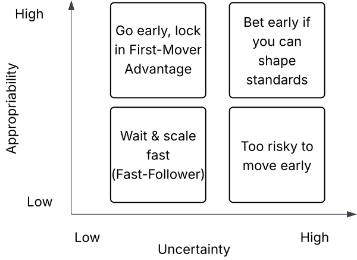
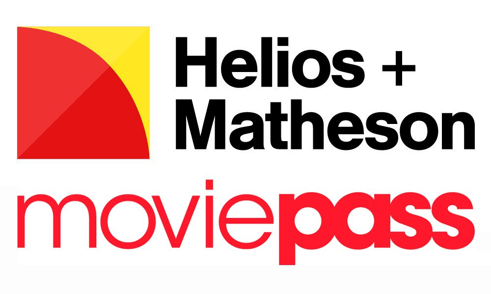

Entry Timing Strategies
Kate Wang
Penn State University
The Transformation of GPUs
Background
- NVIDIA began with graphics-focused GPUs for gaming (1999).
- Shifted opportunity: GPUs could handle general-purpose parallel workloads (scientific, enterprise, AI).
Question: When should NVIDIA have entered general-purpose compute markets?
Entry Timing Options
- Option 1 (2006): CPUs dominate, GPUs dismissed for enterprise/scientific use.
- Option 2 (2012): Deep learning breakthrough (ImageNet, AlexNet success).
- Option 3 (2023): AI ecosystem mature (infrastructure, data, compute, applications).
Class Poll: Which was the "right" entry point?
Option 1: First-Mover Advantage vs. Disadvantage
Concept
- Scale economies
- Customer loyalty
- Brand recognition
- Learning curve benefits
- Preferential access to scarce resources (Lieberman & Montgomery, 1988)
Example:
NVIDIA enter in 2006 to creat a developer base before AI “took off.”
High market/technology uncertainty → costly education.
Option 2: Follower (Fast-Second) Strategies
Concept:
- Free-ride on pioneers’ market education
- Avoid technological dead-ends
- Adopt cheaper/better versions (Schnaars, 1994)
Example:
Post-2012, when AlexNet proved GPU value, rivals (Google TPUs, AMD, etc.) entered.
NVIDIA, as incumbent, could still dominate due to early developer tools.
Entrant may arrive too late if first-mover already locked ecosystem.
Option 3: Industry and Complementary Dynamics
Concept:
- Entry depends on ecosystem readiness (Teece, 1986; Gans & Stern, 2003).
- Complementary assets (software, distribution, infrastructure, regulation) shape value capture.
Example:
By 2023, cloud infrastructure (AWS, Azure, GCP), open-source frameworks (TensorFlow, PyTorch), and chip fabs enabled scale.
Entry at this stage allows rapid scaling but risks entrenchment by incumbents.
Decision Conditions
Appropriability Regime
Strong appropriability:
IP, standards, brand lock-in, network effects → favor early entry.
Example: Amazon in e-commerce (logistics, customer data).
Appropriability Regime
Weak appropriability:
Easy imitation, high upfront costs → favor waiting.
Example: TiVo (too early, ecosystem not ready).
Example: Early VR headsets without ecosystem
Uncertainty
High uncertainty:
Technology/market unclear → risky early entry.
Example: GPUs for general-purpose compute (pre-AlexNet).
Uncertainty
Low uncertainty:
Market/technology clear → safe to move early.
Example: Apple launching iPhone/iPad.
Decision Matrix
📝 Group Exercise (5 minutes)
Fill in the Uncertainty-Appropriability matrix with other examples from different industries
Key Takeaways
Entry Timing Success Factors
- First-Mover Advantage vs. Disadvantage: Early entrants may secure customer loyalty, scale economies, and learning curve benefits, but risks high market/technology uncertainty and costly education.
- Uncertainty: High uncertainty → risky early entry, but can be mitigated by waiting for market/technology clarity or be the fast-follower.
- Appropriability: Strong appropriability → favor early entry.
Remember: Perfect timing doesn't exist - it's about making informed decisions with available information.
Simulation Case Studies
Whether Helios & Matheson should enter the movie-ticketing market by acquiring MoviePass?
